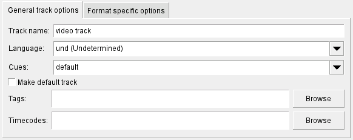
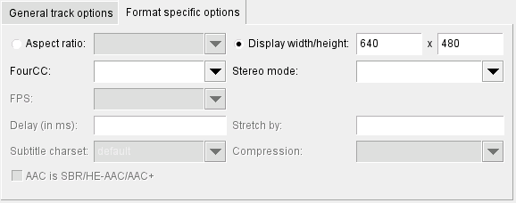
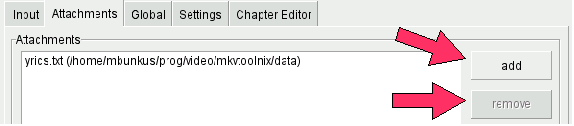
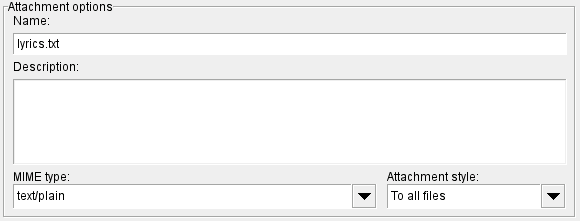

Figure 1: Use this button to select the path to the
mkvmerge program.
(Note: simply copied from www.matroska.org.)
Matroska aims to become THE Standard of Multimedia Container Formats. It was derived from a project called MCF, but differentiates from it significantly because it is based on EBML (Extensible Binary Meta Language), a binary derivative of XML. EBML enables the Matroska Development Team to gain significant advantages in terms of future format extensibility, without breaking file support in old parsers.
If you need any more info please head over to Matroska's homepage.
mkvmerge and mkvmerge GUI (or just mmg) are two programs created by Moritz Bunkus. They're part of the mkvtoolnix package. mkvmerge can read a lot of different multimedia files and put their contents into Matroska files. Unfortunately this is a command line program, and not everyone is comfortable working on the command line. This is where mkvmerge GUI comes into play. It is a GUI that provides the user with an intuitive but powerful interface to mkvmerge.
Both programs are available for both Windows and GNU/Linux and other Unix derivatives. The program is licensed under the GPL, so the source code is available to anyone interested.
You can always find the latest version of mkvtoolnix on Moritz Bunkus' website. Windows users will have to download the runtime DLLs as well as the mkvtoolnix binaries. Linux/Unix users will probably download the sources and compile mkvtoolnix themselves.
This guide only focuses on the GUI part of these tools. All command line options are explained in detail in mkvmerge's man page/HTML page.
(Note: This section does not cover compilation and
installation. mkvmerge's own documentation and the
README files that are included in the
mkvtoolnix package.)
Figure 1: Use this button to select the path to the
mkvmerge program.
The only thing that mmg needs to know is the location of the mkvmerge binary. Under normal circumstances it will be found automatically. But if not then you can select the binary to use on the Settings tab.
mkvmerge strictly differentiates between files and tracks. An input file usually contains one or more tracks. mkvmerge needs at least one input file and the file name of the Matroska file it should create before it can do any work. Starting with this minimal set of options the user can add more input files, select advanced options for each track, apply some more global options etc.
The typical basic steps are:

Figure 2: Use these buttons to add and remove
files.
When mmg starts up it shows the first and probably most important tab: the input tab. Here you see four different elements. The topmost input box lists all input files. Directly under this box are options that apply to the currently selected input file.
Figure 2 shows the three buttons to the right of the upper list box that can be used to add files to the list box with the add and append buttons and to remove the selected entry with the remove button.
There is a difference between adding and appending a file. Normally, the tracks of all added files are put into the resulting Matroska file in parallel. This is usually the case if you have e.g. a video track, one or more audio tracks and one or more subtitle tracks. They all contain material that belongs to the same timecodes and that has to be played simulatneously.
Appending a file on the other hand will cause all tracks of the second file to be appended to tracks of a previously added file. That way the contents of those tracks will be played one after the other. You can only concatenate tracks that are of the same kind (video to video tracks etc), have the same codec (e.g. MP3 to MP3 but not MP3 to AC3) and the same parameters (e.g. the sample rate must match).
You can tell an added file from an appended one by
looking at its name. Appended files and tracks start with
"++>".

Figure 3: One enabled and one disabled track. The second
track will not be copied into the output file.
Once the user has added at least one input file in the upper list box the second list box will contains all available tracks. Each track is ENabled by default and will be muxed into the resulting file. However, you can change that by simply clicking on the check box right in front of the track's name in the second list box. This is shown in figure 3.
For each of these tracks the user can select track specific options with the input boxes and check boxes below the track listing. These options will be described in the following sections.
To the right of the track list box there are two buttons with which
you can control the order of the tracks in the output file. By hitting
the up and down the currently selected track is moved in
the appropriate direction. There are some restrictions to moving
appended tracks around (the ones that start with
"++>") like an appended track must not be
the first track etc.
Once the user has added and selected an input file he can set options
that apply to this specific file. At the moment three such options have
been implemented, and they all are only available for Matroska files:
No chapters, No attachments and No
tags. These options tell mkvmerge not to copy any
chapters / attachments / tags from the current source file.
More information about chapters can be found in the section about the chapter editor in this document and in mkvmerge's own documentation.
Depending on the type of the currently selected track (audio, video, subtitles) and even depending on the contents of the track only a subset of all the track specific options are available. These options span over two sub-pages. There are general track options and format specific options.

Figure 4: Options common for all kinds of tracks
Note: Unless overridden by the user mkvmerge will either copy track settings from the input file if the source format supports such information, or it will use sensitive default values.
The available general options are:
Track name: The user can set a name for the current
track. This name is a free-form string. Practical examples could be
'director's comments' or 'great view of Seattle'. Note that these names
are not meant to contain the movie title!Language: The user can select the language for each track
regardless of its type. This language is coded in the ISO639-2 language
code. The drop-down box contains all ISO639-2 codes so the user does not
have to worry about selecting the wrong language code.Cues: The cues are for Matroska what the index is
for AVI files. They contain links to the key frames. Usually this option
should be left on the value 'default'. mkvmerge will automatically
chose the best method for any given track type. A full explanation of
tracks can be found in mkvmerge's documentation.Make default track: Matroska knows a flag which tells the
player that a specific track should be preferred upon playback if the user
does not chose another one. Of course each track type has its own
default track - e.g. the default audio track is the English one, and the
default subtitle track is the French one. If no track is set to be the
default track then mkvmerge will promote the first track of each
type that it finds to be the default track. This is consistent with the
behavior of various media players.Tags: For each track you can create a XML tags file. For a
full explanation of all tags please refer to the example file and mkvmerge's own documentation. In probably
99% of all cases you want to use THIS option and associate tags with a
specific track. The tags option on the global tab is probably not what you
need.Timecodes: Normally mkvmerge will derive the
timecodes for each frame from the source file, but it can also
read and use timecodes from an external text file whose name you
can specify here. This feature is a very advanced feature. Almost
all users should leave this entry empty.

Figure 5: Typical options for a video track
The format specific options include:
Aspect ratio: With this option the user can set the aspect
ratio that should be used upon playback. It defaults to the aspect ratio
that the movie was encoded with but can be changed, e.g. for anamorphic
encodings. The GUI expects the format to be either a floating point number
(e.g. '2.33') or a fraction (e.g. '16/9').
FourCC: Matroska does not normally store the Four-CC
which is used in other containers to identify the codec used. Matroska
has its own format, called CodecID, but it also has an AVI
compatibility mode. In this mode the FourCC is also stored. With this
option the FourCC can be forced to a different value. However, you
cannot change the CodecID used by mkvmerge.
Stereo mode: There's a technology of providing
pseudo three dimensional images by playing back two video tracks
that have been filmed from slightly different positions
simultaneously. Each eye only sees one of those tracks. This is
called stereo mode. Most users should leave this empty.
FPS: Number of frames per second for
AVC/h.264 video tracks. When you add AVC/h.264 elementary streams
then mkvmerge must be told which how many frames per second
this video was recorded with because that piece of information is
not available in elementary streams. If you don't select anything
then mkvmerge defaults to 25. You can either enter a
floating point number (e.g. 29.97) or a fraction
(e.g. 30000/1001).

Figure 6: Typical options for an audio track
Delay (in ms): In some cases audio and video are
not synchronized properly. With this option the user can offset
the timecodes of any track by a given amount, either positive or
negative. The number you enter here is the amount in milliseconds
that is added to each timecode after the Stretch by
factor has been applied (see below).
Stretch by: In some cases audio and video slowly
drift apart during playback. This can be fixed by supplying a
factor of how much the time codes should be stretched
by mkvmerge. If nothing is entered then '1.0' is assumed
which does not alter the time codes.
Delay is added (see above).
Subtitle charset: Some text subtitle formats do not store
the charset that they were created with. This is important because text
subtitles are automatically converted to the UTF-8 charset during
muxing. mkvmerge will normally assume that the system's current
charset is the same that the subtitle file was written in. But in case
this is not true the user can select the correct charset.

Figure 7: Typical options for a text subtitle track
Compression: Matroska features a powerful system for
compressing tracks with lossless compression algorithms. Those
compressions can be applied to any given track, but some players only
support this for VobSub tracks. This is where it's most useful. Other
tracks, especially audio and video tracks, are already compressed so
that additional compression will not yield any result. For VobSubs you
can achieve an additional gain of about 30% if you enable zlib
compression. That's why it is the default for VobSub tracks.
AAC is SBR/HE-AAC/AAC+: The new technology called 'high
efficiency AAC' has some drawbacks when it is being stored in
.AAC files: it is not possible to detect the HE-AAC part
for these files. Therefore the user has to check this option manually
if it applies. Please note that this problem does not exist for HE-AAC
stored in .MP4 files.Matroska files can also contain other files, called attachments. This works basically just like with your favorite email program. The idea is to provide additional information about the file. Some examples could be cover photos for a CD rip, additional background information in text form about the movie or even some compressed fonts for the subtitles.
Every attachment needs two things: the file name (obviously) and the MIME type that should be associated with the file. The usage is very easy and similar to adding files on the input tab.

Figure 8: Add and remove attachments with these
buttons.
On the second tab of the GUI, the attachment tab, you can add a file with the + button and remove the selected attachment with the - button. Once an attachment has been selected the other controls on this tab will be available. You do have to select a MIME type for each attachment, but the description is optional - although it is a good idea to always provide a description. This makes it easier for others to identify what you've attached to this Matroska file.

Figure 9: Typical options for an attachment
The last option, attachment style, is only evaluated when
you also split the output into several files. (Splitting in general is
explained in the following section.) If the option To all
files is selected then the current file will be attached to all
output files created. If the option Only to the first is
selected then the file is only attached to the very first output file
created.
The third tab, Global, is packed full of options that apply to the complete file and not just to one or more tracks.

Figure 10: Selecting a title for the movie
File/segment title: This title is used for the actual
movie title, e.g. 'Vanilla Sky'.
The Split section handles how the output file is split
into several smaller files. If no splitting is selected then only one
big file is generated. If splitting is activated then you can tell
mkvmerge to start a new output file after either a specific
amount of data has been written to the current file or after a specific
timecode has been reached. The accepted formats are:
HH:MM:SS.nnn
with up to nine digits for up to nanosecond precision or a number
followed by the letter 's' indicating a number of
seconds. Several timecodes can be entered separated by
commas.

Figure 11: Typical options for splitting. Create two files
which will be approx. 700megs big.
Don't link: This option controls how mkvmerge will
handle splitting. A little explanation about this feature:
Matroska supports file linking which simply says that a specific file is the predecessor or successor of the current file. To be precise, it's not really the files that are linked but the Matroska segments. As most files will probably only contain one Matroska segment I simply say 'file linking' although 'segment linking' would be more appropriate.
Each segment is identified by a unique 128 bit wide segment UID. This UID is automatically generated by mkvmerge. The linking is done primarily via putting the segment UIDs of the previous/next file into the segment header information. mkvinfo prints these UIDs if it finds them.
If a file is split into several smaller ones and linking is used then
the time codes will not start at 0 again but will continue where the
last file has left off. This way the absolute time is kept even if the
previous files are not available (e.g. when streaming). If no linking is
used then the time codes should start at 0 for each file. By default
mkvmerge does not use file linking because some players still
don't handle linked files properly. If you want linking that you can
turn it on by enabling this link files check box.
Regardless of whether splitting is active or not the user can tell
mkvmerge to link the produced files to specific
UIDs. This is done by entering a valid segment UID into the
two input boxes, Previous segment UID and
Next segment UID. These options accept a segment
UID in the format that mkvinfo outputs: 16 hexadecimal
numbers between 0x00 and 0xff prefixed with '0x' each and
separated with spaces, e.g. 0x41 0xda 0x73 0x66 0xd9
0xcf 0xb2 0x1e 0xae 0x78 0xeb 0xb4 0x5e 0xca 0xb3
0x93. Alternatively a shorter form can be used: 16
hexadecimal numbers between 0x00 and 0xff without the '0x'
prefixes and without the spaces, e.g.
41da7366d9cfb21eae78ebb45ecab393.
If splitting is used then the first file is linked to the UID given in
the Previous segment UID input box, and the last file is
linked to the UID given in the Next segment UID input
box. If splitting is not used then the one output file will be linked to
both of the two UIDs.
With the browse button you can select the chapters to add to the output file. A full explanation of all aspects around chapters can be found in the Chapter editor section.
Unlike the tags you can select for each track on the input tab the tags selected here have to contain the track UIDs. These tags are not assigned to any track automatically. In 99% of all cases this is NOT the option you want to use!
The full explanation can be found in mkvmerge's documentation.
Once everything has been set up the muxing process can be started. The
last thing to do is to chose where to mux to. With the
browse button you can select the output file. After this has
been done hit the Start muxing button or select the same entry
from the Muxing menu.
If everything has been set up correctly mmg will show the muxing dialog. The progress is shown at the top, as is a general description of what mkvmerge is doing at the moment.

Figure 12: The muxing window
mkvmerge knows three different 'severity levels' for its messages: status reports, warnings and errors. All status report messages are shown in the upper window. These include the track types encountered and other interesting things.
Warnings are shown in the middle window. mkvmerge will not abort when it issues a warning, but it might stop muxing the track for which the warning was printed. You should pay close attention to all warning messages.
Errors are show in the lower window. Errors are always fatal, and mkvmerge will stop muxing right after it has printed the error message. Such a message might be that the hard disc is full or that the source file is damaged and cannot be processed any further.
The button Abort sends mkvmerge the signal to stop
muxing. Unless mkvmerge is stuck in some endless loop it will stop
soon after you've pressed the button. With Save log you can
save the complete output from mkvmerge into a text file for further
study or in case you've encountered a bug and want to send me some
additional information.
All your hard work of setting options does not have to be lost when you
exit the program. You can save all your muxing settings into text based
configuration files with the Save settings option in the
File menu and restore them later with the Load
settings option. The default extension is .mmg and is
usually not used by other programs. You can also associate this extension
with mmg so that it automatically loads the settings if it is called
with the name of such a settings file.
For the case that you have several files that you want to mux you don't have to prepare the first file, wait for it to finish muxing, prepare the second, wait for it to finish muxing etc. mkvmerge GUI contains a job manager which can queue complete jobs and run them one after another at your conveniance. The basic steps when using the job manager are:
Add to job queue button and select a title that
this job will be referred under.Manage jobs
from the Muxing menu.Start button.

Figure 13: The job management dialog
Each job has six attributes: an ID which is automatically chosen my
mkvmerge GUI; its status (pending - it hasn't been
muxed yet, done - muxing has completed successfully,
done with warnings - muxing has completed successfully but
there were warnings, failed - the muxing process failed); the
name that you've entered before; the time and date on which the job was
added to the job queue; the time and date when the muxing process was
started for this job and the time and date when the muxing process
finished.
The general controls are located at the bottom. The Start
button will start the muxing process for all jobs whose status is
pending. The Start selected button will start
the muxing process for all jobs that are currently selected independent
of their status.
The buttons on the right manipulate all selected jobs. The
Up and Down move the selected jobs up and down in
the list. The Re-enable button sets the jobs' status to
pending so that they will be started the next time the
Start button is pressed. The Disable button
will set the status to done.
During the muxing process mkvmerge's output will not be shown but
saved. If you want to see a job's output you can hit the View
log button. This is useful if a job completed with warnings or if it
failed completely.
One of the new features of mmg is a full-featured chapter editor. It can read text based chapter files, import chapters from existing Matroska files, write text based chapter files that can be selected on the global tab and write chapters directly to existing Matroska files.
Unlike a lot of other systems Matroska supports nested chapters. This basically means that you can define sub chapters for chapters.
A chapter entity in Matroska consists of at least four items: The UID of the track(s) it applies to, the chapter title/name, it's start time and the language code associated with it. Additional elements are optional and include the end time, more language codes and country codes. Usually the user will only need the mandatory elements. Of these he can only specify the name, the start time and the language code. mkvmerge will then automatically assign all chapters to the complete file.
The first example is a simple one. The movie in question contains four parts: The intro starting at the beginning, the first act, the second act, and the credits. Note that the end timestamps are optional.
Intro (from 00:00:00, language English)
Act 1 (from 00:01:00, language English)
Act 2 (from 00:05:30, language English)
Credits (from 00:12:20 until 00;12:55, language English)
A more complex example including sub chapters. Let's take Ludwig van Beethoven's opera Fidelio. For the sake of brevity I'm only including the first three pieces of the two acts.
The first act contains:
The first act, which will be our first chapter, has a combined length of 11:20. Our second act has a length of 17:06. These chapters would look like this:
Erster Akt (from 00:00:00 until 00:11:20, language German,
country Germany)
Ouvertüre (from 00:00:00 until 00:06:24, language
German, country Germany)
Arie: 'Jetzt, Schätzchen, jetzt sind wir allein'
(from 00:06:24 until 00:11:10, language German, country Germany)
Dialog: 'Armer Jaquino' (from 00:11:10 until 00:11:20,
language German, country Germany)
Zweiter Akt (from 00:11:20 until 00:28:26, language German,
country Germany)
Ouvertüre und Arie: 'Gott! welch Dunkel hier!'
(from 00:11:20 until 00:22:06, language German, country Germany)
Melodrama und Duett: 'Wie kalt ist es' (from 00:22:06
until 00:27:27, language German, country Germany)
Dialog: 'Er erwacht!' (from 00:27:27 until 00:28:26,
language German, country Germany)
mkvmerge and mmg's chapter editor both support different formats for chapter files.
One of the most basic formats is the format used in OGM files. It is a text based format. Each chapter entry contains of two lines, the first containing the start time, the second the chapter's title/name. All lines are numbered.
The first example from above can be expressed in this format:
CHAPTER01=00:00:00.000
CHAPTER01NAME=Intro
CHAPTER02=00:01:00.000
CHAPTER02NAME=Act 1
CHAPTER03=00:05:30.000
CHAPTER03NAME=Act 2
CHAPTER04=00:12:20.000
CHAPTER04NAME=Credits
The second example cannot be expressed in this format because it supports neither language specifications nor end times or nested chapters. The advantage is that such files are very easy to create, and there are several tools available for both Windows and Unix/Linux that create such files directly from DVDs.
Due to its limitations mmg cannot output chapters in this format.
I've created a XML based chapter format that closely matches the system Matroska uses. With this format you have the full control over all features. I won't describe this format here in detail. Please have a look at the example XML chapter files that came with mkvtoolnix.
The chapter editor can read chapters directly from Matroska files. These can be written to XML chapter files or back to the same Matroska file or another Matroska file. All features are supported.
The chapter editor consists of three parts: the tree view of all chapters, the four buttons used for adding and removing chapter entries, and the input boxes which are used for setting the chapter entry's data.

Figure 14: The chapter editor showing the example from
above
In Matroska files one chapter is defined by having a start time, a name and a language that is associated with that name. You can have several names for one chapter and each associated with a different language. You may also add an end time, but that is not mandatory.
A new chapter file is started with the New option from the
Chapter editor menu. You can add a new chapter with the
Add chapter or Add subchapter buttons. The
difference between these two buttons is that when a chapter has been
selected Add chapter will append a new chapter directly
after the selected chapter on the same level, and Add
subchapter will add a new chapter as the last child of the
currently selected chapter.
The Remove chapter has to be used with care. It removes the
complete subtree without asking for confirmation, and there is no undo
option available at the moment.
After selecting a chapter entry you can change its data. The format for
the start and end time are either HH:MM:SS.mmm or simply
HH:MM:SS. One chapter name will already have been added. You
can edit it and select the language that this name is given in. This way
you could provide names in several languages, e.g. 'The hero arrives' with
'eng' as the language and 'Der Held kommt an' with 'ger' as the
language. Just hit the Add name button if you need more
entries and Remove name in order to get rid of one.
Creating many chapters and always changing the language can be quite some
work. Therefore you can select which language and country tags
mmg should add by default with the Set default values
menu entry in the Chapters menu. The
Set values button does something similar. With it you can
apply a language and/or country to the currently selected entry and all its
children.
Saving chapters to XML files can be done with Save or
Save as. Save as cannot be used to write chapters
to an existing Matroska file - you'll have to use Save to Matroska
file for that.
You can load existing chapter files or chapters from Matroska files by
selecting the Load option from the Chapter editor
menu. mmg will automatically detect the file type used and read the
chapters.
mmg features an editor for header fields of existing Matroska files. It can be started from mmg's "File" menu by chosing the "Header editor".
The header editor allows the user to edit certain fields of the segment information headers and of the headers of each track without having to remux the whole file. Its usage is simple: load a file, select the header fields you want to change, change its value, and save the file.
The Matroska file format allows for most header fields to be present or absent. mmg's header editor will show inputs for all header fields it supports even if they're currently not present in the file. It allows the user to add fields that are currently not present to the file and to remove currently present fields from the file.
The user can start editing a file by chosing "Open" from the "File" menu. After selecting the appropriate file the header editor will scan the file for all important elements. This can take some time depending on the file's size. This is neccessary due to Matroska's flexible file structure.
After opening the file the left pane will show one element for the segment headers and one element for each track that is found in the file. Each node in the tree contains a number of sub-elements which represent the actual header values. When the user selects such a sub-element the right pane is updated to show a number of facts about the element:
Most value types are self-explanatory: numbers, strings etc. The binary type however is shown as a sequence of hex digits. The accepted formats are the same as mkvmerge's various options for specifying segment UIDs: either a simple sequence of hex digits (e.g. 1857a7fe7d...) or the hex numbers prefixed with "0x" before each pair (e.g. 0x18 0x57 0xa7 0xfe 0x7d...).
The user can validate your changes by chosing "Validate" from the "Headers" menu. Validation is also run automatically each time the user wants to save the files. Validation makes sure that the values the user supplied can be stored in the element in question. For example a number element must not contain characters.
If validation fails then the first element failing validation is selected so that the user can correct the mistake.
The user can save the changes by selecting "Save" from the "File" menu. If no changes have been made then mmg will say so and not modify the file.
Before modifying the file mmg check if the file has been modified by another application since it has been opened. If this is the case then mmg warns the user, discards all changes and reloads the file in order to ensure that the file will not be corrupted.
mmg tries very hard to find suitable spots for writing the modified headers. It will overwrite existing header elements at their original position, EbmlVoid elements and all other instances of the headers it finds. It will also update the meta seek heads so that the headers can be found easily by applications reading that file.
After saving the file the header editor will automatically reload and analyze it again. This is done to ensure that no file corruoption occurs. As it slows down the process of saving the file considerably this safety feature will be removed in a future release of mmg after enough testing has been done.